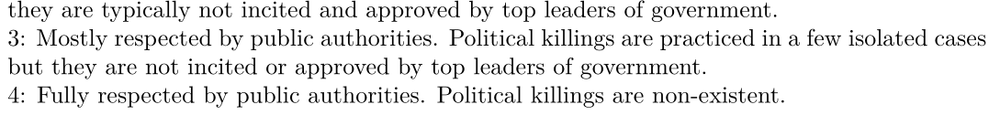
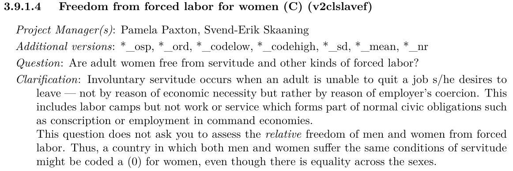
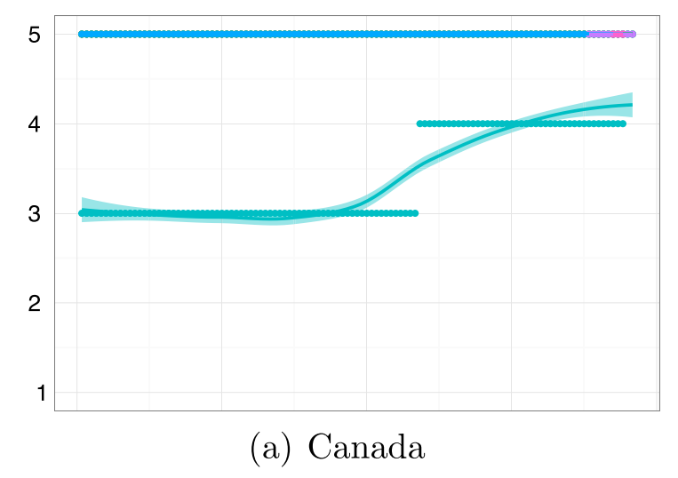
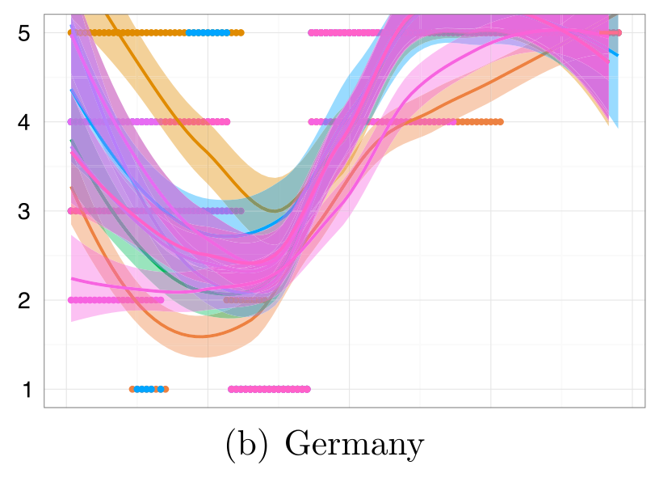
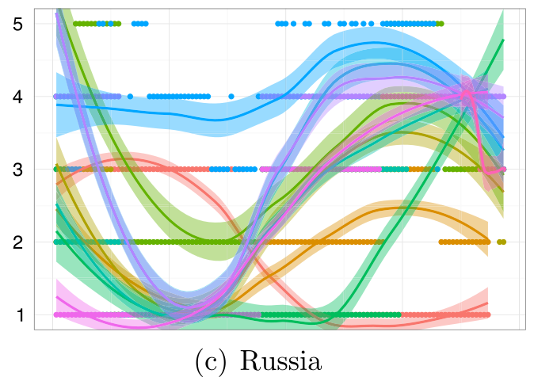
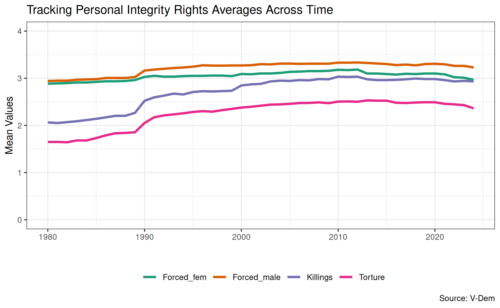
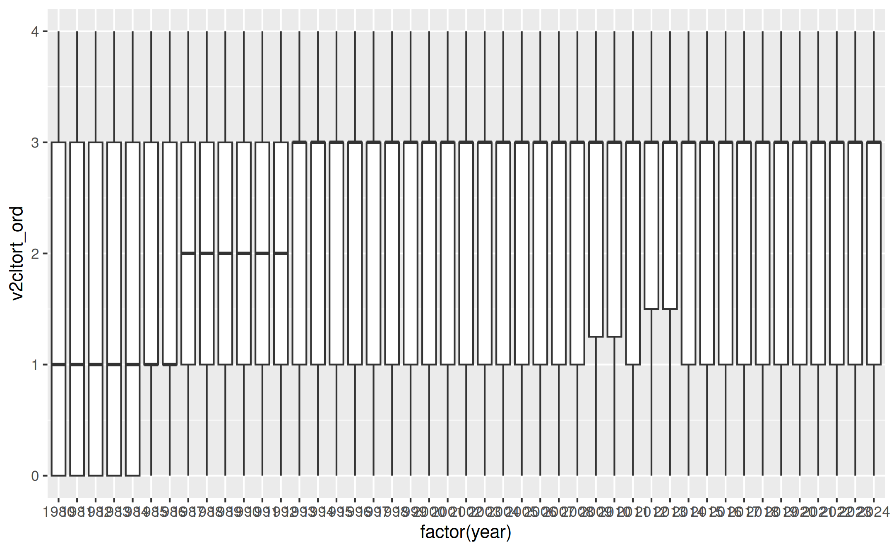

| year | v2clkill_nr | v2clkill_ord_codelow | v2clkill_ord | v2clkill_ord_codehigh |
|---|---|---|---|---|
| 1905 | 7 | 4 | 4 | 4 |
| 1915 | 7 | 4 | 4 | 4 |
| 1925 | 6 | 4 | 4 | 4 |
| 1935 | 6 | 4 | 4 | 4 |
| 1945 | 6 | 4 | 4 | 4 |
| 1955 | 6 | 4 | 4 | 4 |
| 1965 | 6 | 4 | 4 | 4 |
| 1975 | 6 | 4 | 4 | 4 |
| 1985 | 6 | 4 | 4 | 4 |
| 1995 | 6 | 4 | 4 | 4 |
| 2005 | 17 | 4 | 4 | 4 |
| 2015 | 13 | 4 | 4 | 4 |
II. How and why do governments use violence against the people inside their borders?
Justin Leinaweaver (Fall 2025)
Which SINGLE data source would you recommend to someone interested in better understanding the use of political violence by governments around the world?
Your thesis should be a clear recommendation for ONE of the sources and should be supported by AT LEAST THREE distinct reasons for your recommendation
A high quality recommendation will also make clear why you are not recommending the other sources
Sources of Political Violence Data
The US State Department’s “Country Reports on Human Rights Practices”
Amnesty International’s “Annual Country Reports”
The Political Terror Scale (PTS)
The CIRIGHTS data project’s “Physical Integrity Rights”
Varieties of Democracy’s (V-Dem) “Personal Integrity Rights”
Exploring the V-Dem “Personal Integrity Rights” Scores
Evaluate the methodology / codebook
Evaluate the data
II. How and why do governments use violence against the people inside their borders?
“Human Rights Practices” (State Dept and AI)
“Political Terror” (PTS)
“Personal Integrity Rights” (V-Dem)
Measuring “Personal Integrity Rights” (V-Dem)
Operationalization
↓
Instrumentation
↓
Measurement
Freedom from torture
Freedom from political killings
Freedom from forced labor for men
Freedom from forced labor for women
Measuring “Personal Integrity Rights” (V-Dem)
Measuring “Personal Integrity Rights” (V-Dem)

Measuring “Personal Integrity Rights” (V-Dem)
Measuring “Personal Integrity Rights” (V-Dem)

Every Country-Year is Coded by Multiple Experts
What do we do when the experts disagree?

| year | v2clkill_nr | v2clkill_ord_codelow | v2clkill_ord | v2clkill_ord_codehigh |
|---|---|---|---|---|
| 1905 | 7 | 4 | 4 | 4 |
| 1915 | 7 | 4 | 4 | 4 |
| 1925 | 6 | 4 | 4 | 4 |
| 1935 | 6 | 4 | 4 | 4 |
| 1945 | 6 | 4 | 4 | 4 |
| 1955 | 6 | 4 | 4 | 4 |
| 1965 | 6 | 4 | 4 | 4 |
| 1975 | 6 | 4 | 4 | 4 |
| 1985 | 6 | 4 | 4 | 4 |
| 1995 | 6 | 4 | 4 | 4 |
| 2005 | 17 | 4 | 4 | 4 |
| 2015 | 13 | 4 | 4 | 4 |
What do we do when the experts disagree?

| year | v2clkill_nr | v2clkill_ord_codelow | v2clkill_ord | v2clkill_ord_codehigh |
|---|---|---|---|---|
| 1905 | 21 | 3 | 3 | 3 |
| 1915 | 21 | 3 | 3 | 3 |
| 1925 | 10 | 3 | 3 | 3 |
| 1935 | 11 | 0 | 0 | 0 |
| 1955 | 11 | 4 | 4 | 4 |
| 1965 | 11 | 4 | 4 | 4 |
| 1975 | 11 | 4 | 4 | 4 |
| 1985 | 11 | 4 | 4 | 4 |
| 1995 | 11 | 4 | 4 | 4 |
| 2005 | 17 | 4 | 4 | 4 |
| 2015 | 9 | 4 | 4 | 4 |
What do we do when the experts disagree?

| year | v2clkill_nr | v2clkill_ord_codelow | v2clkill_ord | v2clkill_ord_codehigh |
|---|---|---|---|---|
| 1905 | 11 | 1 | 1 | 1 |
| 1915 | 11 | 1 | 1 | 2 |
| 1925 | 10 | 0 | 0 | 0 |
| 1935 | 10 | 0 | 0 | 0 |
| 1945 | 10 | 0 | 0 | 0 |
| 1955 | 10 | 1 | 1 | 2 |
| 1965 | 10 | 1 | 2 | 2 |
| 1975 | 10 | 1 | 2 | 2 |
| 1985 | 10 | 1 | 2 | 2 |
| 1995 | 10 | 3 | 3 | 3 |
| 2005 | 18 | 2 | 2 | 2 |
| 2015 | 15 | 1 | 1 | 1 |
Personal Integrity Rights
Correlations Across the Measures
| v2cltort_ord | v2clkill_ord | v2clslavem_ord | v2clslavef_ord | |
|---|---|---|---|---|
| v2cltort_ord | 1.00 | 0.81 | 0.53 | 0.52 |
| v2clkill_ord | 0.81 | 1.00 | 0.54 | 0.50 |
| v2clslavem_ord | 0.53 | 0.54 | 1.00 | 0.82 |
| v2clslavef_ord | 0.52 | 0.50 | 0.82 | 1.00 |
If someone came to you with the goal of better understanding the use of political violence by governments around the world, which of the data sources that we explored in class would you recommend and why?
Your report should introduce each source to the reader with your analysis of its strengths and weaknesses.
Ultimately, your central argument should be a clear recommendation of which source(s) they should focus on.
Review your notes on the five sources we have explored in class and be ready to make an argument for and against EACH of them.
old slides


Improved the most, and
Regressed the most across the years in the sample